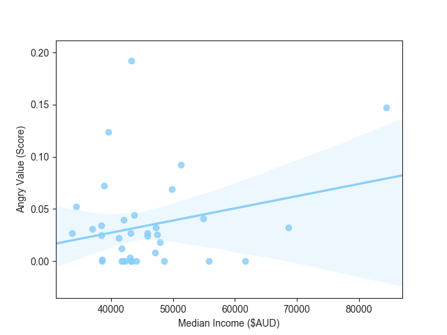

As our project targets on analysing the relationship between work pace level of each city and its corresponding anger value, and the big cities usually come with faster work pace and higher working pressure. Due to the limited space, we chose the top5 cities in the histogram, according to its populations and total numbers of tweets that can be trace back to, and compare the angry value with its Median Annually Income and Unemployment Rate. From the chart, Sydney has the highest median income and highest anger value and Melbourne has the lowest personal median income and almost the lowest anger value. However. Brisbane also has high median income but the lowest angry value. Hence, high income doesn’t necessarily lead to higher angry value and it seems that there is no obvious correlation between the unemployment rate and the angry value.
In statistics, linear regression is a linear approach to modelling the relationship between a scalar response (or dependent variable) and one or more explanatory variables (or independent variables). From the scatter plot, we can see there is a potentially positive correlation between the angry values of each city and its median personal income, although there is still a few outliers lie beyond. Besides, the correlation between the unemployment rate and angry value demonstrate a slightly correlation as expected, and is even slightly negative. Unfortunately, there is no obvious correlation between median age of earners and the angry value. This liner regression model doesn’t fully verify our hypothesis, due to the limited size of our tweets data set and biased dataset.
© Copyrights Instant. All Rights Reserved